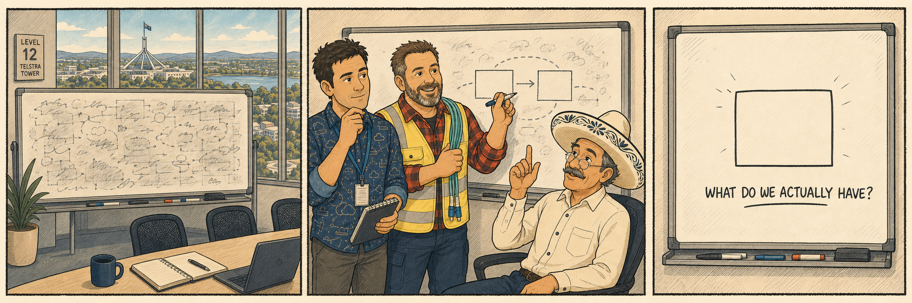
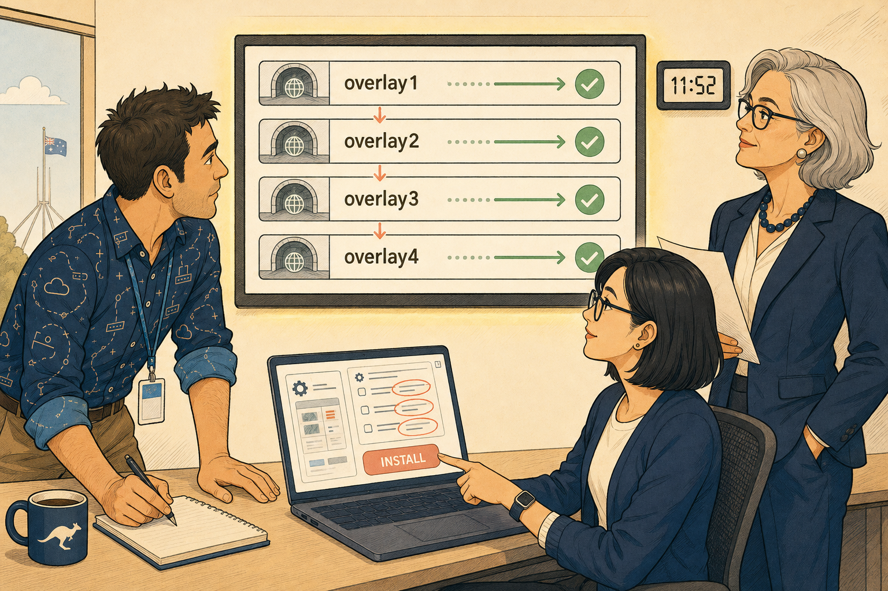

The Sites
In which a tower, two data centres and five branches stop being a list and become a shape.

The Department's shape is deliberate. Telstra Tower in Canberra is the headquarters — executive floors, the network and security operations desks, the main user floor, and the room every incident ends up in. It was chosen because it sits centrally between the two data centres and belongs to neither of them, so an outage can hit the office, Tuggers or Gunners independently, and the office needs resilient connectivity towards both.
Tuggers is the primary data centre and overlay hub one. Gunners is the secondary data centre and, since EP-12, overlay hub two. Fibre runs between them. Both are data-centre locations, not office floors — people travel there for maintenance, failover and physical work, and otherwise stay in the tower.
Everything else hangs off those two. Sydney is a satellite office with its own local internet breakout. Perth, Adelaide and Darwin are ZTP-provisioned spokes carrying four tunnels each. Brisbane is racked, cabled and still blocked — its MPLS member has no gateway value mapped, and the member itself has no hub to reach. Twenty-five further branches land next quarter, and eleven Fisheries Compliance sites transfer in on 1 September.
| Site | Role | State | Arrived |
|---|---|---|---|
| Telstra Tower, Canberra | Headquarters — exec, NOC/SOC, main user floor | Live | Day one |
| Tuggers | Primary DC · overlay hub 1 · FortiGate HA cluster | Live | Day one; hub EP-11 |
| Gunners | Secondary DC · overlay hub 2 · FortiGate HA cluster | Live | Day one; hub EP-12 |
| Sydney | Satellite office · local breakout · hosts 10.60.20.0/24 | Live | EP-06 design, EP-10 built |
| Perth | Spoke · 4 tunnels · fisheries compliance feed | Live | EP-07 ZTP |
| Adelaide | Spoke · 4 tunnels | Live | EP-07 ZTP |
| Darwin | Spoke · 4 tunnels · carries the Rev 27 static | Live, one prefix misrouted | EP-11 overlay |
| Brisbane | Spoke · MPLS member with no hub | Blocked — mpls_gateway unmapped | EP-10 |
| 25 further branches | Spokes, of the thirty ordered | Pending delivery next quarter | EP-07 order |
| Fisheries Compliance ×11 | Transferring division with its own OSPF domain | Not connected | Transfers 1 September |
The headquarters was placed between the data centres, not inside one. That single choice is what makes "the office is down" and "a data centre is down" two different incidents — and what makes resilient office-to-both-DC connectivity a requirement rather than a nicety.
The Underlay
In which two unequal links at Tuggers turn out to have taught the whole estate its manners.
Tuggers has two WAN members: port1 on ISP1 at 500Mb and port2 on ISP2 at 200Mb, sitting in wan1-zone. That 2.5:1 ratio is the oldest fact in the story and the source of the first four episodes' worth of trouble. The zone now runs volume load-balance-mode with weights 5:2, applied through a DC-scoped SD-WAN template rather than by hand — the debt opened in EP-04 and finally paid in EP-11.
The branch estate is served by a single SD-WAN template, SD-WAN_Branch-Standard, and hardware variation is absorbed by installation targets rather than by forking the template. That is why one template can give Sydney a breakout, give Brisbane an MPLS member, and give Perth neither.
| Member | Zone | Where | Installation target |
|---|---|---|---|
port1 — ISP1 | wan1-zone (Tuggers) / internet (branch) | Tuggers 500Mb; every branch | Empty — all devices |
port2 — ISP2 | wan1-zone (Tuggers) / internet (branch) | Tuggers 200Mb; every branch | Empty — all devices |
overlay1–overlay4 | overlay | Every overlay-attached site | Empty — wizard-authored |
port4 — MPLS | MPLS | Sydney, Brisbane | Grp-MPLS-Branches |
port5 + Sydney-Breakout service | local breakout | Sydney only | Sydney |
An empty installation target does not mean "no devices". It means no filter — every device the template reaches. The inversion is the single most expensive misreading available in this estate, because it is silent: the install succeeds and reports success either way.
Above the members sit the rules. At Tuggers, an explicit rule matches Teams by ISDB — first-packet identification, not multi-packet classification — and steers it with Lowest Cost (SLA). Everything else falls to the implicit rule, which is not a dumb default: it uses the same session-birth decision and the same session caching as any explicit rule, governed by load-balance-mode at the zone instead of a strategy at the rule.
Across the branch estate, the Department-bound rule expresses the hub preference deliberately: overlay1 and overlay2 (Tuggers) as priority members, overlay3 and overlay4 (Gunners) as fallback. That is where hub failover lives — at the SD-WAN layer, which measures SLA and can differentiate per application, rather than at BGP, which only reacts to a route disappearing and is blind to a brownout.
"The first packet chooses. Every packet after it just shows the access card it was already given." — Señor Gonzalez, EP-03
diagnose sys sdwan health-check status for the live latency / jitter / loss numbers next to sla_map; diagnose sys sdwan member for member state against configured bandwidth; diagnose sys sdwan sessions for which member a session is pinned to.
Overlays = Hubs × Transports
This is the expression that sizes the whole overlay estate, and the one that cost a wrong answer in EP-11. An overlay is a hub-transport pair, not a transport. A second hub does not join the existing overlays; it creates its own set. Two hubs and two transports is therefore four overlays — four tunnel subnets, four tunnel interfaces, four SD-WAN members at every spoke.
Everything downstream falls out of that number: the address plan, the member list, the zone membership, the fallback ordering in the Department-bound rule, and how many tunnels Racks watches come up when a branch boots.
The Overlay
In which four tunnels replace the assumption that the public internet was good enough.

The overlay address space is 10.200.0.0/14, sized deliberately for a two-hub region that did not yet exist when it was allocated. Each hub-transport pair owns a /24 of tunnel addressing, and every node carries one loopback out of a single pool.
| Overlay | Hub | Transport | Tunnel subnet | Role in the rule |
|---|---|---|---|---|
overlay1 | Tuggers | ISP1 (port1) | 10.201.1.0/24 | Priority |
overlay2 | Tuggers | ISP2 (port2) | 10.202.1.0/24 | Priority |
overlay3 | Gunners | ISP1 (port1) | 10.203.1.0/24 | Fallback |
overlay4 | Gunners | ISP2 (port2) | 10.204.1.0/24 | Fallback |
Loopback pool 10.200.1.0/24 — one address per node. Tuggers 10.200.1.1, Gunners 10.200.1.2. Pool sizing at full estate scale is still an open question. | ||||
How the tunnels are built
| Setting | Hub end | Branch end |
|---|---|---|
| Tunnel type | Dynamic — dial-up server | Static — the spoke initiates |
net-device | disable | enable |
| Peer identity | Matches on local ID | Local ID set; remote-gw names the hub's public address per transport |
| Tunnel addressing | exchange-interface-ip in use, giving fixed tunnel addressing under BGP-on-loopback | |
| Segmentation | network-overlay enabled with a distinct network-id per overlay — a runtime guard against cross-overlay traffic, not an addressing control | |
| ADVPN | Deliberately disabled. Deferred to Season 6 so it is not added to the fault surface before the plain overlay is proven. | |
The spoke dials in. The hub cannot know spoke addresses in advance, which is precisely why the hub end is a dial-up server and why the design scales to thirty branches without the hub's configuration growing.
The Control Plane
In which the estate discovers that a route can be valid, best, and completely ignored.
Routing across the overlay is iBGP in a single private AS, with sessions terminating on loopbacks. Route next hops name a loopback, and that loopback is resolved recursively through the overlay zone via the wizard's static to 10.200.1.0/24. ibgp-multipath is enabled so both hubs sit in the FIB simultaneously — which is the whole job BGP is asked to do here. It makes both hubs reachable; the SD-WAN layer decides which one is used.
There is still no filtering, no communities and no route policy in production. That is not an oversight, it is the current state, and it is what Season 3 is for.
get router info bgp network 10.60.20.0/24 # BGP's belief: two valid internal paths, one best get router info routing-table details 10.60.20.0/24 # what actually forwards # Darwin: static via 203.0.113.254 out port1 at distance 10 <-- best # BGP entry at distance 200, next hops resolving fine <-- installed nowhere
Administrative distance is trust in the source, not quality of the path. Protocols have no common currency, so the FortiGate never compares their metrics. It ranks the sources, installs the lowest, and metric only breaks ties within a protocol afterwards. The losers do not disappear — they stay valid in the RIB, which is why "the route is there" is not a claim about forwarding until you say which table.
| Source | Distance | Present in the estate |
|---|---|---|
| Connected | 0 | Everywhere |
| Static | 10 | Darwin's Rev 27 — beats the overlay for 10.60.20.0/24 |
| eBGP | 20 | Not in use |
| OSPF (all types) | 110 | Arrives with Fisheries — will beat iBGP by default |
| iBGP | 200 | The overlay. Everything the Department built. |
What arrives on 1 September
The Fisheries Compliance Division brings eleven sites and an existing OSPF domain. The approved design terminates that domain at Tuggers and Gunners only — branches remain iBGP-only and form no OSPF adjacencies. Redistribution runs both ways at the two hubs, gated by route maps: a prefix-list controlling what may cross on import, a tag set on export, and a tag-match deny preventing re-import of a prefix that has already crossed.
The business justification Dr Finch signs is manageability: two places to look during an incident rather than eleven. Nothing is enabled until the prefix-list is written and signed off, and none of the route-map syntax has been built yet.
An OSPF adjacency coming up in a building outranks the iBGP overlay for any shared prefix, with nobody having configured a preference anywhere. That traffic leaves IPsec, leaves SLA measurement, leaves the SD-WAN rule and leaves FortiAnalyzer's picture — silently.
The Management Plane
In which the estate is only as real as the thing that can rebuild it.
FortiManager is not a convenience here; it is the reason thirty branches are possible. Onboarding is ZTP — CSV-driven placeholder device objects, each carrying a one-shot device blueprint, triggered by call-home discovery. Ongoing configuration is owned by templates, grouped and ordered, with variation absorbed by metadata variables and installation targets. FortiAnalyzer holds the central log picture, including from Sydney, which inspects locally and forwards.
Branch-Standard: System, CLI, SD-WAN, Static Route, in that order. Order is declared, not hoped for — port5 must exist before it can be added as a member.Grp-MPLS-Branches holds Sydney and Brisbane; the Sydney breakout targets Sydney alone.mpls_gateway is the live example — and the unmapped one is exactly why Brisbane is blocked.Check Config Status across the target set → read Install Preview per device → confirm the change is authored where you think it is → install. The Darwin static is being removed by CLI template, not by hand on the box, for exactly this reason.
Department Topology — Current as of EP-13
Everything live, everything blocked, and everything still on a truck.
🏢 Headquarters
Exec, NOC/SOC, user floor
Resilient to both DCs
⚓ Data Centres & Overlay Hubs
HA cluster · loopback 10.200.1.1
port1 500Mb / port2 200Mb
wan1-zone, volume 5:2
HA cluster · loopback 10.200.1.2
ISP1 + ISP2 dial-up servers
SD-WAN fallback
🐟 Spokes
4 tunnels + port4 MPLS
port5 local breakout
hosts 10.60.20.0/24
compliance feed
encrypted since EP-11
standard branch build
Rev 27 static, AD 10
10.60.20.0/24 misrouted
port4 MPLS member orphaned
no MPLS hub exists
Delivery next quarter
ZTP + Branch-Standard
Transfers 1 September
Terminates at hubs only
Every spoke holds four overlay members in one zone and prefers the two that land on Tuggers. Losing Tuggers entirely shifts new sessions to overlay3/overlay4; losing one Tuggers transport shifts nothing at all, because both remaining Tuggers overlays are still priority members. No impact and no change are different statements.
What Is Still Wrong
The honest column. Every entry here is a live consequence, not a wish list.
| Item | Consequence today | Status |
|---|---|---|
Darwin's Rev 27 static — 10.60.20.0/24 via ISP1 at distance 10 | Compliance traffic leaves Darwin unencrypted and dies at the ISP. Root cause confirmed EP-13. | Removal scheduled via CLI template, not executed |
| Sibling statics from the same April era | Unknown. The estate has never been searched for them. | Not started |
Brisbane's mpls_gateway mapping | Site cannot be installed. | Blocked |
Brisbane's orphaned port4 MPLS member | A transport with no hub. Waiting on either an MPLS link at a hub, or overlay placeholders. | Parked — Season 6 |
| Fisheries prefix-list | No redistribution may be enabled until it is written and signed off. | Not written |
| Route-map / prefix-list / tag syntax | Reasoned about correctly, never typed. Design statements have not become configuration. | Scheduled — EP-16 |
| Contractor site-level isolation | Perth and Sydney contractors sharing one Branches ADOM can see each other's devices. | Deferred — Season 5 |
| Loopback pool sizing at full scale | 10.200.1.0/24 is comfortable now and unproven at thirty-plus nodes. | Parked |
| ADVPN | Every spoke-to-spoke flow hairpins through a hub. | Deliberately deferred — Season 6 |
| Security profiles | Entirely unscheduled. | Unscheduled |
"Darwin's static was correct on the day it was typed. What are we about to type at the hubs that'll be correct on the day, and cactus come April?" — Racks, on the bridge line
The Flip-Card Wall
Answer out loud before you flip. A correct answer after peeking doesn't count — house rules.
Four. An overlay is a hub-transport pair, so overlays = hubs × transports. A second hub does not join the existing overlays — it creates its own set. Perth went from two tunnels to four with no topology redesign.
10.204.1.0/24, inside 10.200.0.0/14. Loopbacks come from 10.200.1.0/24, one per node — Tuggers .1, Gunners .2. The space was sized for two hubs while only one existed.
Beaten on administrative distance, or an unresolvable recursive next hop. get router info routing-table details <prefix> tells you which. BGP output describes belief; the routing table describes forwarding.
OSPF at 110 beats iBGP at 200, and nobody configured anything. The traffic leaves IPsec, SLA measurement, the SD-WAN rule and FortiAnalyzer's picture, with no alarm. Which is exactly why the OSPF boundary terminates at the two hubs only.
BGP only reacts to a route being withdrawn. It is blind to a brownout and cannot differentiate per application. SD-WAN measures SLA and can. BGP's job is reduced to making both hubs reachable at once — ibgp-multipath — so the fast layer has something to choose between.
The rule selects nobody and the traffic falls through to the next rule and ultimately the implicit rule. The FIB decides who is in the room; the rule decides who gets picked. Members are the action, never the match.
Nothing. Rule evaluation happens once, at session birth. An SLA verdict lives on the inspection plane and never touches the cached forwarding entry. Only an admin clear or a genuine FIB/route change forces a fresh lookup.
All of them. Empty means no filter, not no devices. This is the estate's most expensive silent misreading — the install succeeds and reports success either way.
The mpls_gateway metadata variable has no mapping for Brisbane, so the template cannot resolve a value. Separately, its port4 MPLS member is an orphan: a transport with no hub, because no hub has an MPLS link. Two faults, one site.
The spoke dials in; the hub is a dial-up server. The hub cannot know spoke addresses in advance, so hub configuration does not grow as branches are added — which is what makes thirty branches survivable.
network-id actually prevent?Cross-overlay traffic at runtime. It is a segmentation guard, not an addressing control — it does nothing about overlapping subnets.
Every redistribution point is a place policy is authored. Two borders means two places to look during an incident instead of eleven. Both borders are gated: prefix-list on import, tag on export, tag-match deny on re-import to stop the mutual-redistribution loop.
The Estate in One Page
The compressed version. Everything Season 3 does next stands on all of it.
port1 500Mb and port2 200Mb in wan1-zone, volume load-balance-mode at 5:2. One branch SD-WAN template; variation lives in installation targets.10.200.0.0/14. Hubs dial-up, spokes dial in. exchange-interface-ip, per-overlay network-id, ADVPN off by choice.ibgp-multipath so both hubs are in the FIB. No filtering yet.diagnose sys sdwan health-check status # live latency / jitter / loss next to sla_map diagnose sys sdwan member # member state against configured bandwidth diagnose sys sdwan sessions # which member a session is pinned to diagnose sys session filter / list # prove the interface a session is bound to diagnose firewall proute list # SD-WAN-derived routes: vwl_service, vwl_mbr get router info bgp network <prefix> # BGP's belief about a prefix get router info routing-table details <prefix> # what actually forwards, and at what distance FortiManager > Device Manager > Config Status # estate-wide drift indicator FortiManager > Install Preview (per device) # pre-install evidence FortiManager > SD-WAN Manager > Overlay Orchestration
Administrative distance in this estate
| Source | Distance | Where it bites |
|---|---|---|
| Connected | 0 | — |
| Static | 10 | Darwin's Rev 27 beats the overlay |
| eBGP | 20 | Not in use yet |
| OSPF | 110 | Will beat iBGP when Fisheries arrives |
| iBGP | 200 | Everything the Department built |
Where each site differs from the standard branch
| Site | The exception |
|---|---|
| Sydney | port5 local breakout + Sydney-Breakout service, targeted at Sydney; also in Grp-MPLS-Branches |
| Brisbane | port4 MPLS member with no hub, and no mpls_gateway value mapped |
| Darwin | A static route older than the overlay, still winning |
| Perth & Adelaide | None — the standard build, which is the point |
| Tuggers | DC-scoped SD-WAN template: wan1-zone, volume mode, weights 5:2 |
How the estate got here
| Episode | What changed on this map |
|---|---|
| EP-01 — The Two Roads Out of Tuggers | First explicit SD-WAN rule at Tuggers: Teams by ISDB, Lowest Cost (SLA) |
| EP-02 to EP-05 | No topology change. Up vs Good, session stickiness, the implicit rule, and a DR test approved on reasoning |
| EP-06 — Direct to the Internet | Sydney satellite introduced; local/central hybrid breakout adopted as the pattern |
| EP-07 — The Branch in a Box | Thirty branch FortiGates ordered; ZTP adopted as the onboarding path |
| EP-08 / EP-09 / SUPP-01 | Template vs device-local ownership, ADOM boundary, metadata variables |
| EP-10 — The Order They Speak In | Sydney's breakout built; Branch-Standard group created; Grp-MPLS-Branches created; Brisbane blocked |
| EP-11 — The Overlay Wizard | Tuggers becomes hub one; two overlays live; 10.200.0.0/14 planned; Tuggers weights finally installed |
| EP-12 — The Second Hub | Gunners becomes hub two; four overlays; ibgp-multipath; priority/fallback rule; no-install-while-Out-of-Sync rule |
| EP-13 — OSPF Across the Estate | Darwin's Rev 27 static diagnosed; Fisheries integration approved — OSPF terminates at the hubs only |